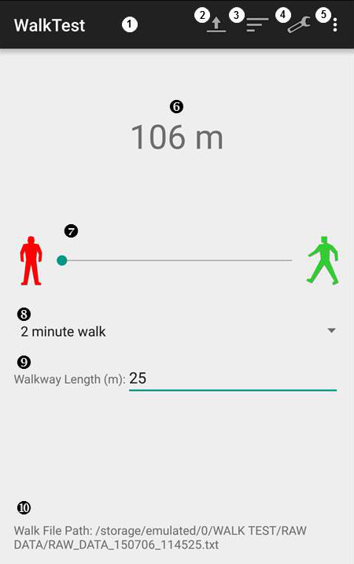
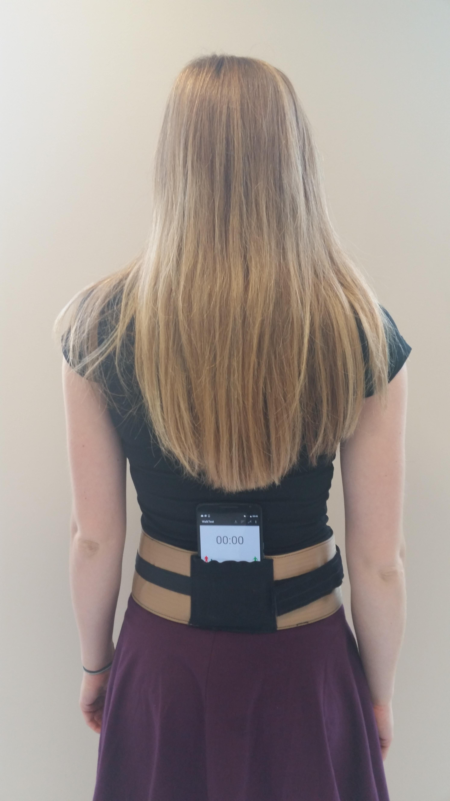
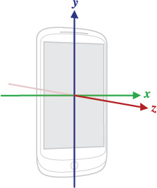

The WalkTest app runs a 2 or 6 minute walk test (WT), where a person walks back and forth on a straight track of set length for 2 or 6 minutes and the total distance walked is calculated. This app enhances the WT by including biomechanical measures from the phone`s sensors.

- Title Bar: displays the app name on the left and buttons on the right
- Select File Button: allows you to access previously collected Test Data and Raw Data files to display the results.
- Display Results Button: allows you to display the results of the most recently selected WT.
- Settings Button: allows you to modify additional settings
- Options Button: provides access to the About Page and the Help Page
- Total Distance: displays the total calculated walking distance, rounded to the nearest metre.This will display a timer before a test is started and while the test is being conducted.
- Slider: slide this to the right to start the WT, and to the left to end the WT before the full time has elapsed.
- Test Selection: a dropdown menu that will allow you to choose either 2 or 6 minute test duration.
- Walkway Length: clicking here will allow you to enter a number in metres representing the walkway length.
- Walk File Path: displays the file's path on the phone.
Layout a walkway, with visible start and end point, and measure the walkway length. Have the person stand at the start point, facing along the walkway.
- Open the app.
- Select either the 2 or 6 minute test duration from dropdown menu (default is 2 minutes).
- Enter the walkway length in metres (default is 25 metres). It is important to know the distance between the start and turn points since the app uses this distance to calculate step length and total distance walked.
- Start the test by sliding the horizontal slider to the right.
- Place the phone in the holster, at the centre of the lower back, with the phone's screen facing outward. The phone's location and orientation is important since the methods for determining right or left steps, turns, and statistics are based on the phone on the back of a person's pelvis with the screen facing outwards.
- Wait for the phone to beep, indicating the start, and then walk.
- Walk back and forth on the straight track until you hear another beep. At the second beep, the sensors stop collecting data.
- To display the results, choose "Display Results" button in the Title Bar (at the top of the home screen).

- .txt file containing the distance, step count, and other results (related to pelvis orientation and stride parameters) from the walk test
- .txt file containing sensor data collected during the walk test. "Log Raw Data" must be selected in Settings
- Steps: number of steps in each walkway (time from foot strike on one side to foot strike on opposite side).
- Speed(m/s): walkway length divided by time taken to complete each walkway.
- Step Length(m): average distance covered in a single step (walkway length divided by number of steps).
- Cadence(steps/min): number of steps per minute for each walkway.
- Max ML(m/s2): maximum mediolateral acceleration (side to side motion while walking).
- Left Avg(m/s2): average and standard deviation for mediolateral acceleration to the left side.
- Right Avg(m/s2): average and standard deviation for mediolateral acceleration to the right side.
- Max AP(m/s2): maximum anterior posterior acceleration (forward and backward motion while walking).
- AP Avg(m/s2): average and standard deviation for anterior posterior acceleration in each walkway.
- Avg Tilt(deg): average and standard deviation for angular pelvis movement around the smartphone x-axis.
- Avg Rotation(deg): average and standard deviation for angular pelvis movement around the smartphone y-axis.
- Avg Obliquity(deg): average and standard deviation for angular pelvis movement around the smartphone z-axis.
- Avg Asymmetry: average step time asymmetry for each walkway (difference between left and right step time, divided by the average step time, for each stride).

- User Name: Type in a text to identify the person. This could be an identifying number or the person's name. This information is saved in the Test Data file as "2 Minute Walk Test Results: User Name".
- Walkway Time: Select either 2 or 6 minute test duration here as well.
- Walkway Length: Type in the walkway length in metres.
- Log Raw Data: Select or deselect the checkbox to turn this option on or off. If turned on, a second .txt file will be created and saved in the RAWDATA subfolder containing the raw data from the sensors.
- Raw Data File Name: If "Log Raw Data" is selected, you can type in a name to save the file as. If you do not, the default file name will be "RAW_DATA_date_time.txt".
To see results from previously collected Test Data, click the "Select File" button in the Title Bar. A dialog will be created displaying the subfolder options. Choose "TEST DATA" from the list. Another dialog will be created displaying all of the Test Data files saved to this subfolder. The file names are created in the following format "TEST_DATA_date_time.txt". Choose the file with the correct date and time. Upon selection, you can view the tables and graph created from the walk test results.
To see the results created from previously collected Raw Data, follow the same steps as above except choose the "RAW DATA" subfolder instead. The next dialog will display all of the raw data files created with either the default names or the names you have created. Upon selection, you can view the results as well.
The file path of the .txt files (Raw or Test Data) can be seen at the bottom of the home screen by "Walk File Path:".
- The Android device will not automatically go into sleep mode while this application is running. It is important to not put the device to sleep manually while conducting a walk test since this can cause unexpected behaviour.
- The person needs to complete at least one walkway (i.e. walk, turn, and start walking back) for the app to work since we use number of steps and walkway length to calculate an average step length and final distance. The average, maximum, and minimum number of steps is calculated based on only the completed walkways.
- The acceleration and pelvis parameters are only reported if at least a full stride is completed in the walkway.
- Files are saved in a WALKTEST folder, in either RAWDATA or TESTDATA subfolders